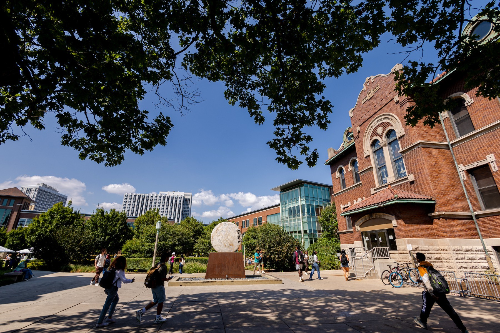

Cell Biology
BIOL 251 · Spring
An active-learning course built around group work, case studies, and frequent quizzes, with very little lecture.


Active learning, group work, and research projects students carry out themselves.
BIOL 251 · Spring
An active-learning course built around group work, case studies, and frequent quizzes, with very little lecture.
BIOL 392 / BIOL 495 · Fall
A course-based undergraduate research experience (CURE) where students take on a real research question. It's cross-listed at the undergraduate and graduate levels and carries experiential learning credit.
BIOL 395 · J-term
Bioterrorism, emerging pathogens, antimicrobial resistance, GMOs, and human impacts on ecosystems.
BIOL 395E / PHIL 288E
A research-intensive course co-taught with Philosophy. Students from both fields work together on community-centered projects with external partners.
BIOL 110
A core scientific literacy course for non-science majors. Alongside the biology, students practice scientific reasoning and learn to weigh the evidence behind claims about health, the environment, and biotechnology.
BIOI 501, BIOL 595, BIOI 499, BIOL 511
Seminar teaching, thesis supervision, and the Biology Teaching Practicum.
In development · with Philosophy
A new signature course with Joseph Vukov, built through Notre Dame's Signature Course Fellowship. Students take on climate change, genetic engineering, and AI with a scientist and a philosopher in the room. It was demonstrated at Notre Dame in May 2026 and is being proposed at Loyola now.